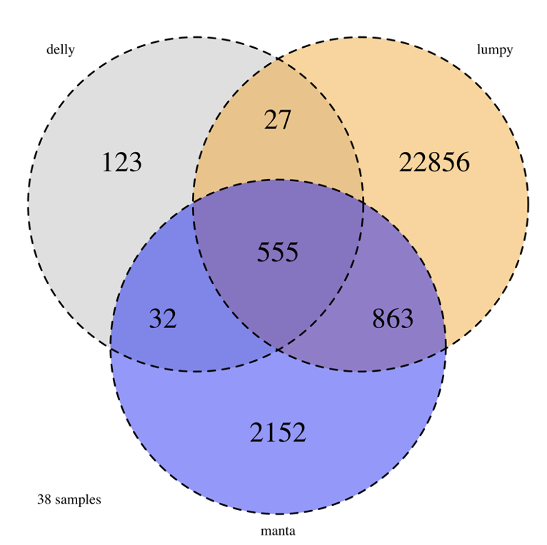

Calling Structural Variations#
This is an HPC pipeline for calling structural variations using three software from 76 matched tumor-normal whole genome sequencing (WGS) bams from 38 childhood acute lymphoblastic leukemia cases.
Smoove (lumpy)#
Manta#
Delly#
Finding variants that were called by at least 2 callers#
Annotate variants#
Create Venn diagram, histograms and html files#
an example Venn graph:
